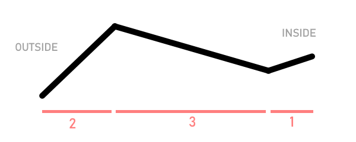

Since I first developed this model I did a little bit of research, since I was quite pleased with how it resembles the famous Aerobie™, the world's most aerodynamic hand-thrown object. From what I could gather, the Aerobie's success is derived mostly from it's particular pattern of ridges on the ring, which have similar properties to an airplane wing both on the leading edge of the disc and the trailing edge. I tried emulating these ridges on the paper frisbee and the results were straighter and further flights, as well as improved rigidity.
To achieve this, I first folded a paper frisbee with 7 units rather than 8. Removing one unit from the ring causes the structure to become ever-so-slightly cone-shaped, which is a perfect base for the ridges. I then made 2 circular creases, one about 1/3 of the way in from the outer edge, one about 5/6 of the way in, with the outer crease being slightly sharper for a steeper rim. Below is a primitive cross-sectional diagram of one side of the ring, for a visual aid. The relative lengths of each section are labeled in red.
 <- to instructions page 2 home